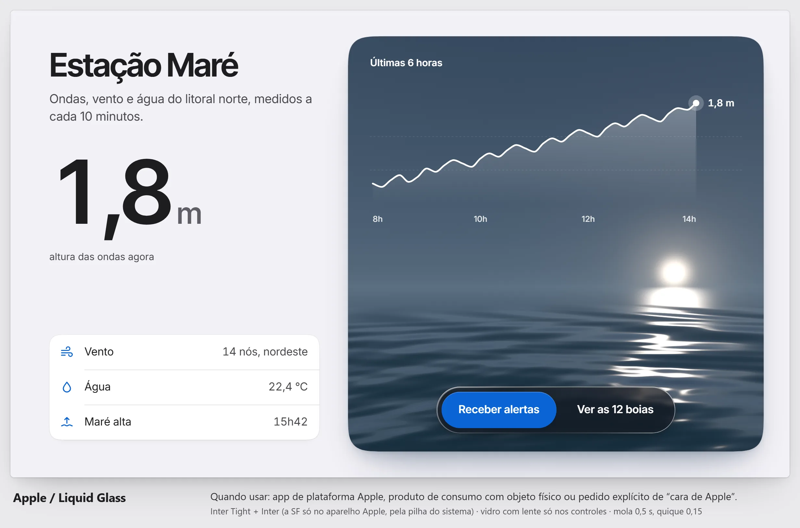
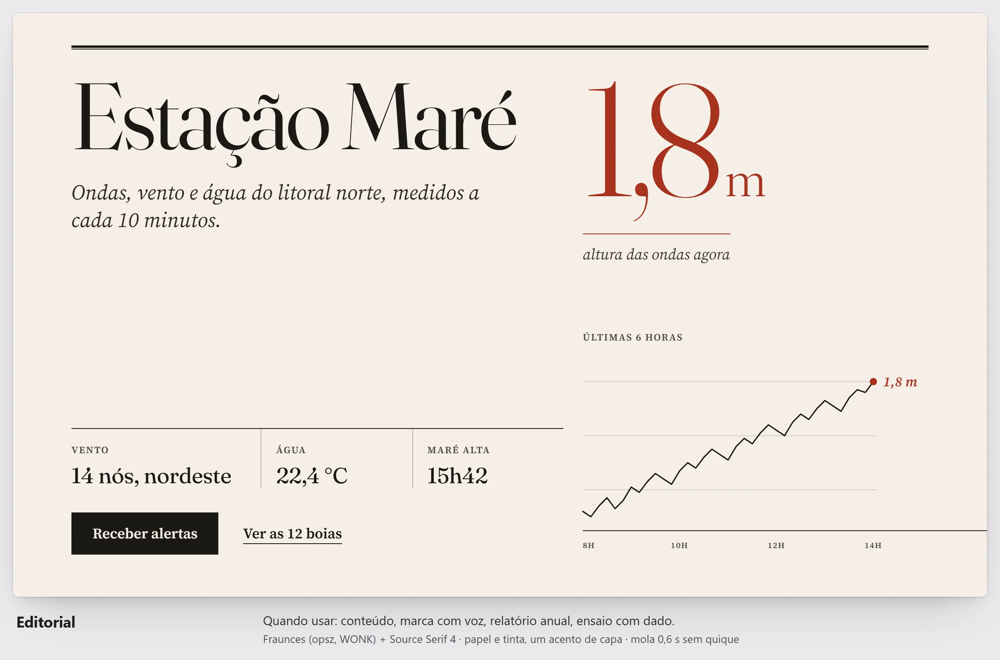
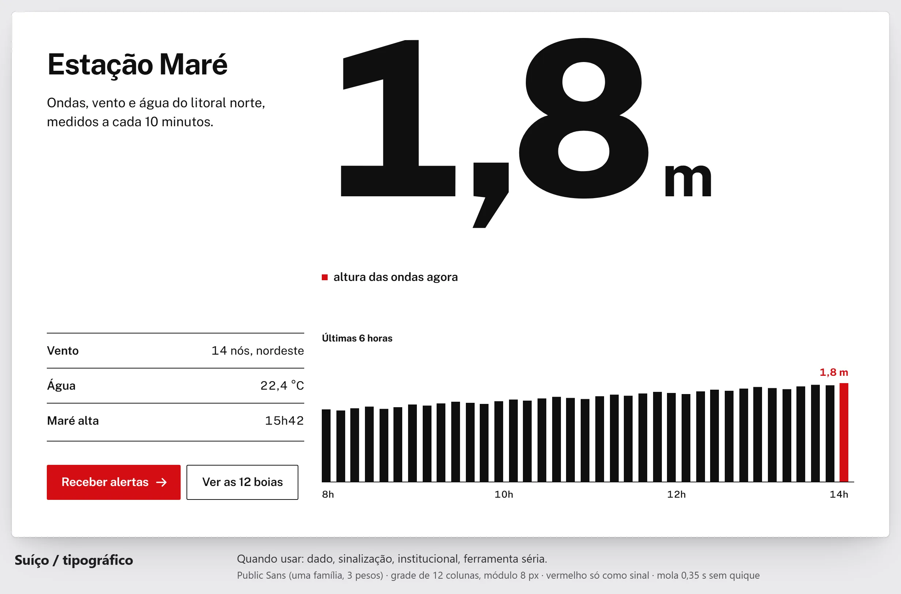
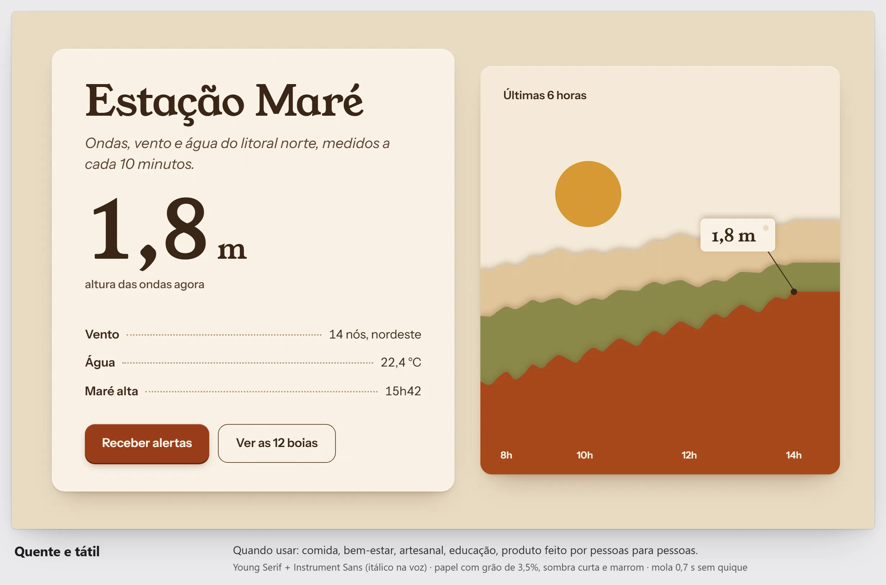
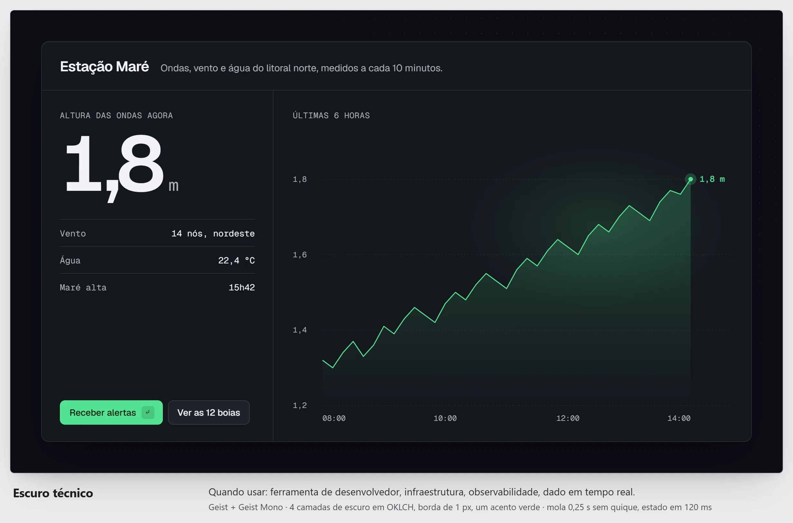
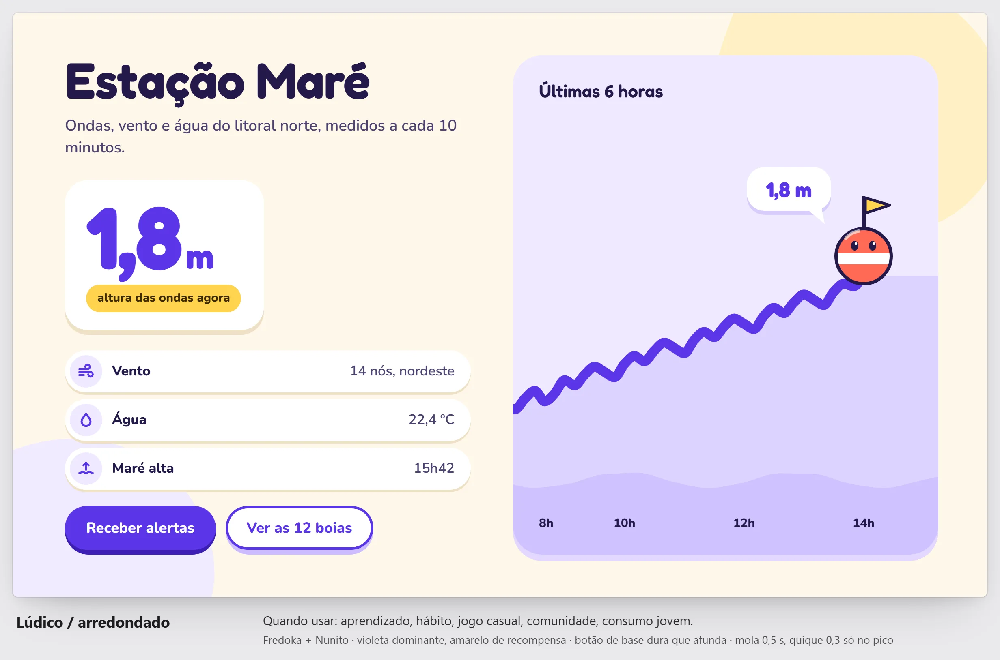
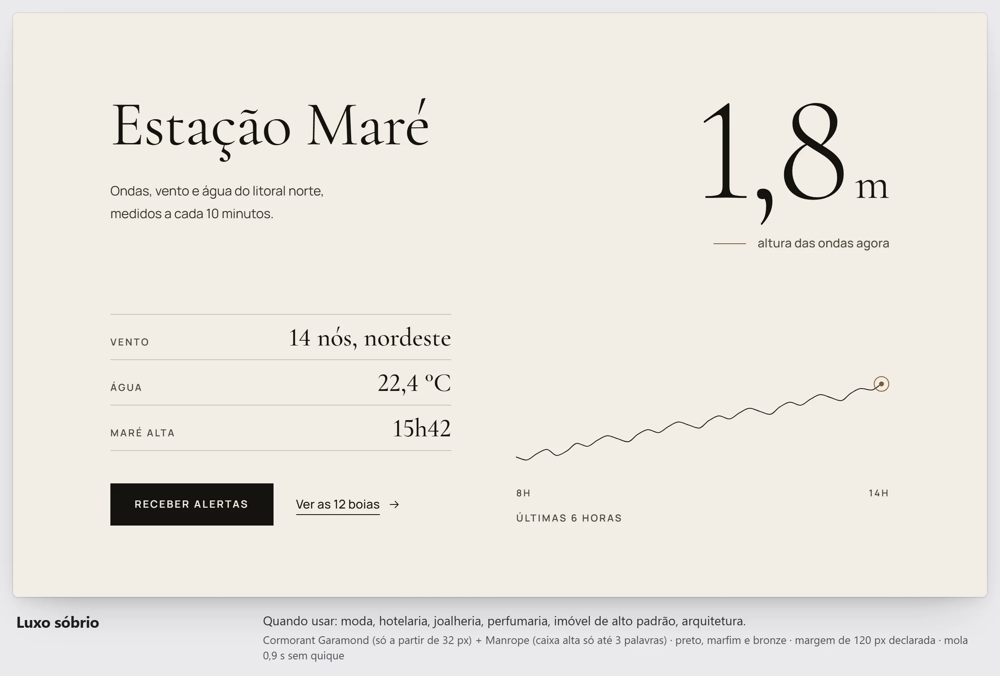
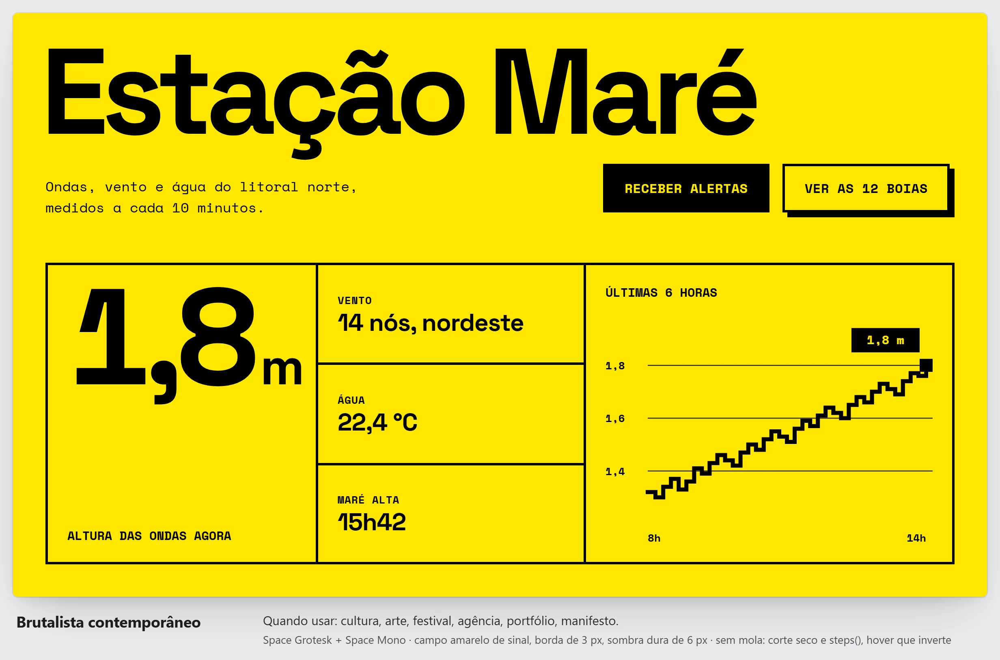
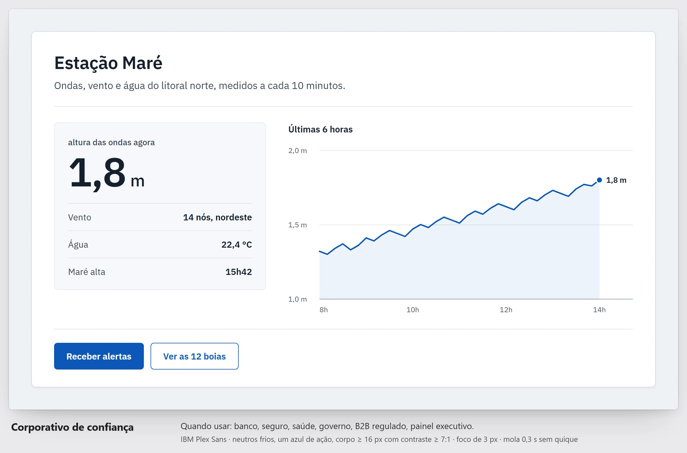
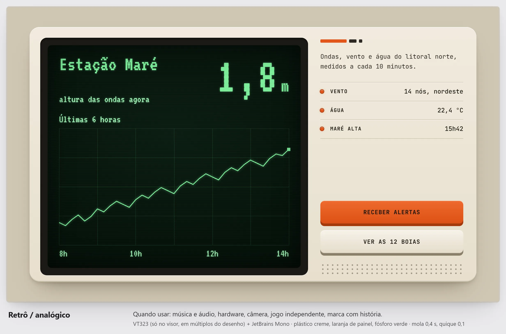

Estação Maré (fictícia) em cada mundo de conhecimento/design/mundos/. Capturas a 2× do index.html, pelo Edge sem interface.

Apple / Liquid Glass

Editorial

Suíço / tipográfico

Quente e tátil

Escuro técnico

Lúdico / arredondado

Luxo sóbrio

Brutalista contemporâneo

Corporativo de confiança

Retrô / analógico